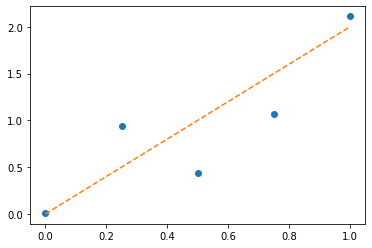
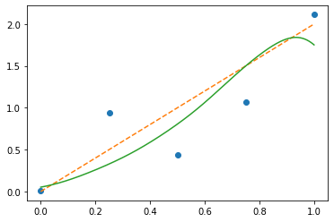

import numpy as np
import matplotlib.pyplot as plt[PINKOCTO] 커널리그레션
x = np.linspace(0,1,5)
xarray([0. , 0.25, 0.5 , 0.75, 1. ])y = x*2 + np.random.randn(5)*0.3
yarray([0.01044984, 0.93755458, 0.43942577, 1.0639859 , 2.1133726 ])plt.plot(x,y,'o')
plt.plot(x,2*x,'--')
\[y_i= \sum_{i=1}^{5}\theta_i\exp\left(-\frac{|x-x_i|^2}{2h^2}\right)\]
h= 0.15
x0 = lambda xstar: np.exp(-(xstar-x[0])**2 / 2 / (h**2))
x1 = lambda xstar: np.exp(-(xstar-x[1])**2 / 2 / (h**2))
x2 = lambda xstar: np.exp(-(xstar-x[2])**2 / 2 / (h**2))
x3 = lambda xstar: np.exp(-(xstar-x[3])**2 / 2 / (h**2))
x4 = lambda xstar: np.exp(-(xstar-x[4])**2 / 2 / (h**2))θ0 = 0
θ1 = 0.2
θ2 = 0.5
θ3 = 1.0
θ4 = 1.5xstar = 0.6 θ0*x0(0.6)+θ1*x1(0.6)+θ2*x2(0.6)+θ3*x3(0.6)+θ4*x4(0.6)1.062893318071169_yhat = lambda xstar : θ0*x0(xstar)+\
θ1*x1(xstar)+\
θ2*x2(xstar)+\
θ3*x3(xstar)+\
θ4*x4(xstar)(_yhat(0)-y[0])**20.0017104251892816106loss = (_yhat(0)-y[0])**2 + (_yhat(0.25)-y[1])**2+ \
(_yhat(0.5)-y[2])**2+(_yhat(0.75)-y[3])**2+\
(_yhat(1)-y[4])**2\(loss(\theta_0,\theta_1,\theta_2,\theta_3,\theta_4)\) 를 최소화하는 \({\boldsymbol \theta}\)를 구한다.
_x = np.linspace(0,1,1000)
plt.plot(x,y,'o')
plt.plot(x,2*x,'--')
plt.plot(_x,_yhat(_x))